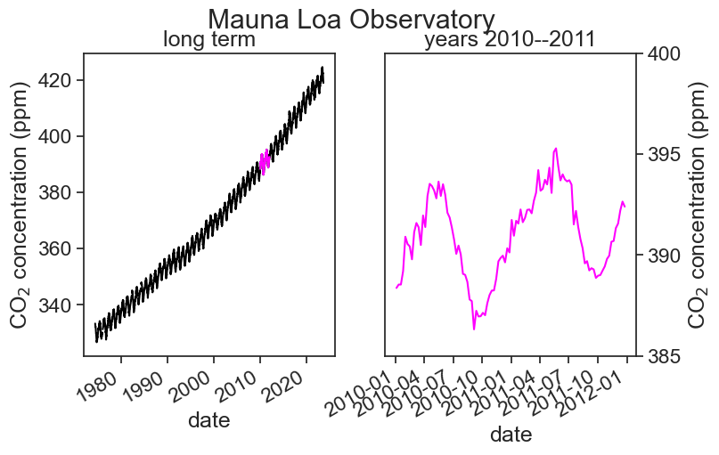
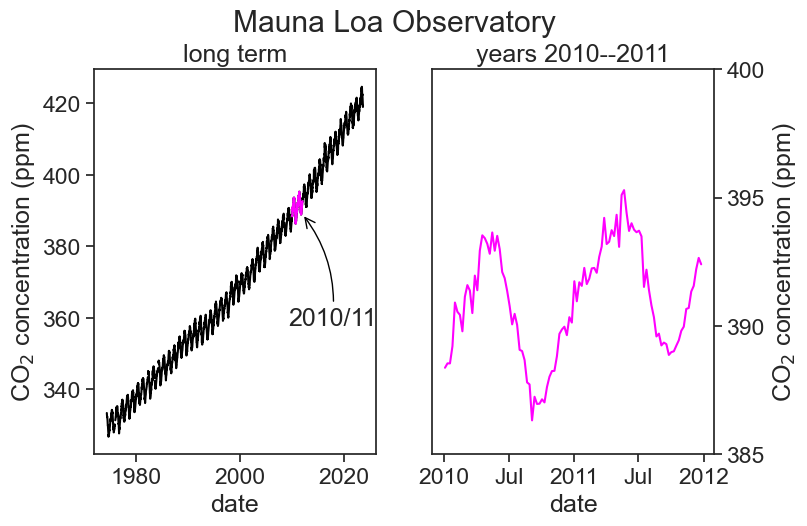
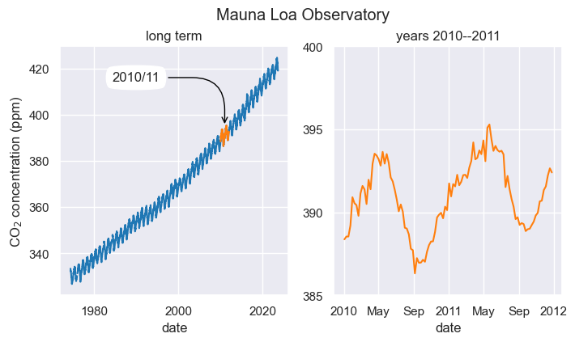

3 learn by example
Now that everything is installed, try to run the code below before the first lecture. Don’t worry if you don’t understand everything.
- If you manage to run everything without errors, this means that your computer is good to go!
- You might encounter a few problems. That’s ok. Make a note and we will solve everything in the first lecture.
Let’s make a first plot of real data. We will use NOAA’s Global Monitoring Laboratory data on Trends in Atmospheric Carbon Dioxide.
3.1 open a new Jupyter Notebook
- On your computer, open the program
Anaconda Navigator(it may take a while to load). - Find the white box called
VS Codeand clickLaunch. - Now go to
File>Open Folder, and open the folder you created for this course. VS Code may ask you if you trust the authors, and the answer is “yes” (it’s your computer). File>New File, and call itexample.ipynb- You can start copying and pasting code from this website to your Jupyter Notebook. To run a cell, press Shift+Enter.
- You may be asked to choose to Select Kernel. This is VS Code wanting to know which python installation to use. Click on “Python Environments”, and then choose the option with the word
anacondain it. - That’s all! Congratulations!
3.2 import packages
First, import packages to be used. They should all be already included in the Anaconda distribution you installed.
3.3 load data
Load CO2 data into a Pandas dataframe. You can load it directly from the URL (option 1), or first download the CSV to your computer and then load it (option 2). The link to download the data directly form NOAA is this. If for some reason this doesn’t work, download here.
# option 1: load data directly from URL
# url = "https://gml.noaa.gov/webdata/ccgg/trends/co2/co2_weekly_mlo.csv"
# df = pd.read_csv(url,
# header=34,
# na_values=[-999.99]
# )
# option 2: download first (use the URL above and save it to your computer), then load csv
filename = "co2_weekly_mlo.csv"
df = pd.read_csv(filename,
comment='#', # will ignore rows starting with #
na_values=[-999.99] # substitute -999.99 for NaN (Not a Number), data not available
)
# check how the dataframe (table) looks like
df| year | month | day | decimal | average | ndays | 1 year ago | 10 years ago | increase since 1800 | |
|---|---|---|---|---|---|---|---|---|---|
| 0 | 1974 | 5 | 19 | 1974.3795 | 333.37 | 5 | NaN | NaN | 50.39 |
| 1 | 1974 | 5 | 26 | 1974.3986 | 332.95 | 6 | NaN | NaN | 50.05 |
| 2 | 1974 | 6 | 2 | 1974.4178 | 332.35 | 5 | NaN | NaN | 49.59 |
| 3 | 1974 | 6 | 9 | 1974.4370 | 332.20 | 7 | NaN | NaN | 49.64 |
| 4 | 1974 | 6 | 16 | 1974.4562 | 332.37 | 7 | NaN | NaN | 50.06 |
| ... | ... | ... | ... | ... | ... | ... | ... | ... | ... |
| 2566 | 2023 | 7 | 23 | 2023.5575 | 421.28 | 4 | 418.03 | 397.30 | 141.60 |
| 2567 | 2023 | 7 | 30 | 2023.5767 | 420.83 | 6 | 418.10 | 396.80 | 141.69 |
| 2568 | 2023 | 8 | 6 | 2023.5959 | 420.02 | 6 | 417.36 | 395.65 | 141.41 |
| 2569 | 2023 | 8 | 13 | 2023.6151 | 418.98 | 4 | 417.25 | 395.24 | 140.89 |
| 2570 | 2023 | 8 | 20 | 2023.6342 | 419.31 | 2 | 416.64 | 395.22 | 141.71 |
2571 rows × 9 columns
3.4 dealing with dates
Create a new column called date, that combines the information from three separate columns: year, month, day.
# function to_datetime translates the full date into a pandas datetime object,
# that is, pandas knows this is a date, it's not just a string
df['date'] = pd.to_datetime(df[['year', 'month', 'day']])
# make 'date' column the dataframe index
df = df.set_index('date')
# now see if everything is ok
df| year | month | day | decimal | average | ndays | 1 year ago | 10 years ago | increase since 1800 | |
|---|---|---|---|---|---|---|---|---|---|
| date | |||||||||
| 1974-05-19 | 1974 | 5 | 19 | 1974.3795 | 333.37 | 5 | NaN | NaN | 50.39 |
| 1974-05-26 | 1974 | 5 | 26 | 1974.3986 | 332.95 | 6 | NaN | NaN | 50.05 |
| 1974-06-02 | 1974 | 6 | 2 | 1974.4178 | 332.35 | 5 | NaN | NaN | 49.59 |
| 1974-06-09 | 1974 | 6 | 9 | 1974.4370 | 332.20 | 7 | NaN | NaN | 49.64 |
| 1974-06-16 | 1974 | 6 | 16 | 1974.4562 | 332.37 | 7 | NaN | NaN | 50.06 |
| ... | ... | ... | ... | ... | ... | ... | ... | ... | ... |
| 2023-07-23 | 2023 | 7 | 23 | 2023.5575 | 421.28 | 4 | 418.03 | 397.30 | 141.60 |
| 2023-07-30 | 2023 | 7 | 30 | 2023.5767 | 420.83 | 6 | 418.10 | 396.80 | 141.69 |
| 2023-08-06 | 2023 | 8 | 6 | 2023.5959 | 420.02 | 6 | 417.36 | 395.65 | 141.41 |
| 2023-08-13 | 2023 | 8 | 13 | 2023.6151 | 418.98 | 4 | 417.25 | 395.24 | 140.89 |
| 2023-08-20 | 2023 | 8 | 20 | 2023.6342 | 419.31 | 2 | 416.64 | 395.22 | 141.71 |
2571 rows × 9 columns
3.5 first plot
We are now ready for our first plot! Let’s see the weekly CO2 average.
# %matplotlib widget
# uncomment the above line if you want dynamic control of the figure when using VSCode
fig, (ax1, ax2) = plt.subplots(1, 2, # 1 row, 2 columns
figsize=(8,5) # width, height, in inches
)
# left panel
ax1.plot(df['average'], color="black")
ax1.plot(df.loc['2010-01-01':'2011-12-31','average'], color="magenta")
ax1.set(xlabel="date",
ylabel=r"CO$_2$ concentration (ppm)",
title="long term");
# right panel
ax2.plot(df.loc['2010-01-01':'2011-12-31','average'], color="magenta")
ax2.set(xlabel="date",
ylabel=r"CO$_2$ concentration (ppm)",
ylim=[385, 400], # choose y limits
yticks=np.arange(385, 401, 5), # choose ticks
title="years 2010--2011");
# put ticks and label on the right for ax2
ax2.yaxis.tick_right()
ax2.yaxis.set_label_position("right")
# title above both panels
fig.suptitle("Mauna Loa Observatory")
# makes slanted dates
plt.gcf().autofmt_xdate()
3.6 first plot, v2.0
The dates in the x-label are not great. Let’s try to make them prettier.
We need to import a few more packages first.
Now let’s replot.
# %matplotlib widget
# uncomment the above line if you want dynamic control of the figure when using VSCode
fig, (ax1, ax2) = plt.subplots(1, 2, # 1 row, 2 columns
figsize=(8,5) # width, height, in inches
)
# left panel
ax1.plot(df['average'], color="black")
ax1.plot(df.loc['2010-01-01':'2011-12-31','average'], color="magenta")
ax1.set(xlabel="date",
ylabel=r"CO$_2$ concentration (ppm)",
title="long term");
# right panel
ax2.plot(df.loc['2010-01-01':'2011-12-31','average'], color="magenta")
ax2.set(xlabel="date",
ylabel=r"CO$_2$ concentration (ppm)",
ylim=[385, 400], # choose y limits
yticks=np.arange(385, 401, 5), # choose ticks
title="years 2010--2011");
# put ticks and label on the right for ax2
ax2.yaxis.tick_right()
ax2.yaxis.set_label_position("right")
# title above both panels
fig.suptitle("Mauna Loa Observatory", y=1.00)
locator = mdates.AutoDateLocator(minticks=3, maxticks=5)
formatter = mdates.ConciseDateFormatter(locator)
ax1.xaxis.set_major_locator(locator)
ax1.xaxis.set_major_formatter(formatter)
locator = mdates.AutoDateLocator(minticks=4, maxticks=5)
formatter = mdates.ConciseDateFormatter(locator)
ax2.xaxis.set_major_locator(locator)
ax2.xaxis.set_major_formatter(formatter)
ax1.annotate(
"2010/11",
xy=('2011-12-25', 389), xycoords='data',
xytext=(-10, -80), textcoords='offset points',
arrowprops=dict(arrowstyle="->",
color="black",
connectionstyle="arc3,rad=0.2"))
fig.savefig("CO2-graph.png", dpi=300)/var/folders/hc/jhnmlst937d27zzq9fhfks780000gn/T/ipykernel_10652/850389963.py:42: UserWarning: AutoDateLocator was unable to pick an appropriate interval for this date range. It may be necessary to add an interval value to the AutoDateLocator's intervald dictionary. Defaulting to 6.
fig.savefig("CO2-graph.png", dpi=300)
/opt/anaconda3/lib/python3.9/site-packages/IPython/core/pylabtools.py:151: UserWarning: AutoDateLocator was unable to pick an appropriate interval for this date range. It may be necessary to add an interval value to the AutoDateLocator's intervald dictionary. Defaulting to 6.
fig.canvas.print_figure(bytes_io, **kw)
The dates on the horizontal axis are determined thus:
locator = mdates.AutoDateLocator(minticks=3, maxticks=5)
This deremines the location of the ticks (between 3 and 5 ticks, whatever “works best”)ax1.xaxis.set_major_locator(locator)
This actually puts the ticks in the positions determined aboveformatter = mdates.ConciseDateFormatter(locator)
This says that the labels will be placed at the locations determined in 1.ax1.xaxis.set_major_formatter(formatter)
Finally, labels are written down
The arrow is placed in the graph using annotate. It has a tricky syntax and a million options. Read Jake VanderPlas’s excellent examples to learn more.
3.7 modifications
Let’s change a lot of plotting options to see how things could be different.
sns.set(style="darkgrid")
sns.set_context("notebook")
# %matplotlib widget
# uncomment the above line if you want dynamic control of the figure when using VSCode
fig, (ax1, ax2) = plt.subplots(1, 2, # 1 row, 2 columns
figsize=(8,4) # width, height, in inches
)
# left panel
ax1.plot(df['average'], color="tab:blue")
ax1.plot(df.loc['2010-01-01':'2011-12-31','average'], color="tab:orange")
ax1.set(xlabel="date",
ylabel=r"CO$_2$ concentration (ppm)",
title="long term");
# right panel
ax2.plot(df.loc['2010-01-01':'2011-12-31','average'], color="tab:orange")
ax2.set(xlabel="date",
ylim=[385, 400], # choose y limits
yticks=np.arange(385, 401, 5), # choose ticks
title="years 2010--2011");
# title above both panels
fig.suptitle("Mauna Loa Observatory", y=1.00)
locator = mdates.AutoDateLocator(minticks=3, maxticks=5)
formatter = mdates.ConciseDateFormatter(locator)
ax1.xaxis.set_major_locator(locator)
ax1.xaxis.set_major_formatter(formatter)
locator = mdates.AutoDateLocator(minticks=5, maxticks=8)
formatter = mdates.ConciseDateFormatter(locator)
ax2.xaxis.set_major_locator(locator)
ax2.xaxis.set_major_formatter(formatter)
ax1.annotate(
"2010/11",
xy=('2010-12-25', 395), xycoords='data',
xytext=(-100, 40), textcoords='offset points',
bbox=dict(boxstyle="round4,pad=.5", fc="white"),
arrowprops=dict(arrowstyle="->",
color="black",
connectionstyle="angle,angleA=0,angleB=-90,rad=40"))Text(-100, 40, '2010/11')
The main changes were:
- Using the Seaborn package, we changed the fontsize and the overall plot style. Read more.
sns.set(style="darkgrid")
sns.set_context("notebook") - We changed the colors of the lineplots. To know what colors exist, click here.
- The arrow annotation has a different style. Read more.
3.8 playing with the code
I encourage you to play with the code you just ran. An easy way of learning what each line does is to comment something out and see what changes in the output you see. If you feel brave, try to modify the code a little bit.